Название
Описание — Краткое описание всех функций редактора
- 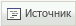Источник
Просмотреть или изменить исходный код документа.
- Новая страница
Удаляет все введенные данные, создавая новую пустую страницу.
- Сохранить
Сохраняет внесенные изменения.
- 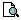Предварительный просмотр
Предпросмотр страницы в браузере.
- Шаблоны
Здесь можно выбрать готовый шаблон педставления информации на экране.
 Вырезать
ВырезатьВырезать выделенный текст в буфер обмена.
 Копировать
КопироватьКопировать выделенный текст в буфер обмена.
- 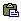
 Вставить
Вставить Вставить данные из буфера обмена (с или без форматирования).
- 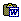Вставить из Word
Вставить содержимое буфера обмена скопированное из Microsoft Word или аналогичных приложений.
- 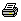Печать
Печать текущего документа.
 Отменить/повторить
Отменить/повторитьОтмена или повтор последних действий.
- 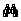Найти
Поиск слова или фразы на странице.
- 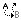Заменить
Найти и заменить слово или фразу.
 Выделить все
Выделить всеВыделить весь текст на странице
- 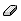Убрать форматирование
Удаление форматирования из выделенного фрагмента.
 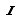
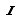

Применяется полужирный, курсив, подчеркивание или зачеркнутый текст для выделенного фрагмента.
 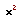
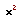Подстрочный и надстрочный индексы
- 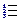
Вставить/удалить нумерованный/маркированный список.
Увеличить или уменьшить отступ.


Устанавливает выравнивание текста (слева, по центру, справа или по ширине).

Вставить/редактировать или убрать ссылку.
 Вставить/редактировать якорь
Вставить/редактировать якорьСоздает или изменяет ссылки на якоря.
- Вставить/редактировать изображение
Вставить новое изображение или изменить свойства уже существующего.
- Вставить/редактировать флэш
Размещает объект Adobe Flash на странице.
- Вставить/редактировать таблицу
Создает таблицу с определенным числом столбцов и строк.
Вставить горизонтальную линию.
Вставляет смайлик.
- 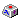
Вставить специальный символ.

Изменить цвет текста.
- 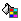
Изменяет цвет фона текста.
- Развернуть окно редактора
Развернуть окно редактора на весь экран.